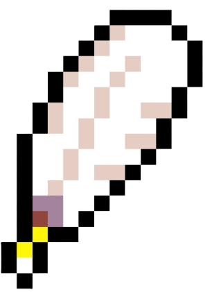
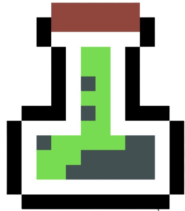
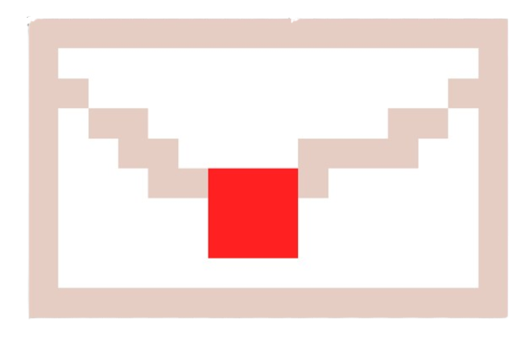

Mamu-bihotza
Objektu hau istorioaren zehar bitan aurkituko dugu, lehenengoa kobazuloan, beste bide bat hartuta, eta bestea parkour atalean, hasierako lekuan salto bikoitz bat eginez.

Luma
Objektu hau kobazuloan aurkituko dugu, honek salto bikoitza egiteko ahalera emango digu, eta honen laguntzaz parkour atalera iritsi eta pasatu ahalko dugu.
Pozioa
Objektu hau parkour atala pasatzean lortuko dugu, eta honek gure mamuak tiroak botatzea ahalbidetuko du.(Ezkerrean pozioa ikusten da, eta eskubian botatzen dituen tiroak, bat direkzio bakoitzeko).
|
 |

|

|

|

|

Karta
Karta parkour atala pasa ondoren lortzen da, honek konbo bat ematen digu, (gora, behera, gora, behera, ezker, eskubi, ezker, eskubi, B eta A) eta hau egitean 5 segunduz hegan egin ahalko dugu.